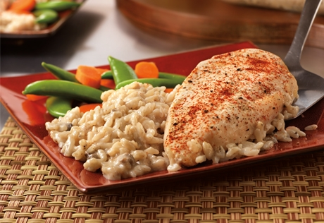

Chicken and Rice

Description
One-Dish Chicken & Rice Bake is a life-changing recipe. Once you know that you can throw uncooked rice and chicken into a baking dish with some condensed cream soup and it bakes up into an amazing one-dish meal, there's no going back. This basic recipe is delicious on its own, but you can also easily change it up to make different versions like Buffalo or Mexican. You can even assemble it ahead of time and bake it when you're ready (like when you walk in the door and all of a sudden it's dinnertime?).
Ingredients
- 1 can (10 1/2 ounces) Campbell's Condensed Cream of Mushroom Soup or 98% Fat Free Cream of Mushroom Soup or Condensed Unsalted Cream of Mushroom Soup
- 1 cup water (for creamier rice, increase the water to 1 1/3 cups)
- 3/4 cup uncooked long grain white rice
- 1 1/4 pounds boneless, skinless chicken breast (4 small or 2 large cut in half lengthwise for thinner pieces)
- 1/4 teaspoon paprika
Steps
- Heat the oven to 375 F. While the oven is heating, stir the soup, water and rice in an 11x8x2-inch baking dish. Season the chicken with salt and pepper and sprinkle with the paprika. Place the chicken on the rice mixture. Cover the baking dish.
- Bake for 45 minutes or until the chicken is done and the rice is tender. Let stand for 10 minutes. Stir the rice and season to taste before serving.